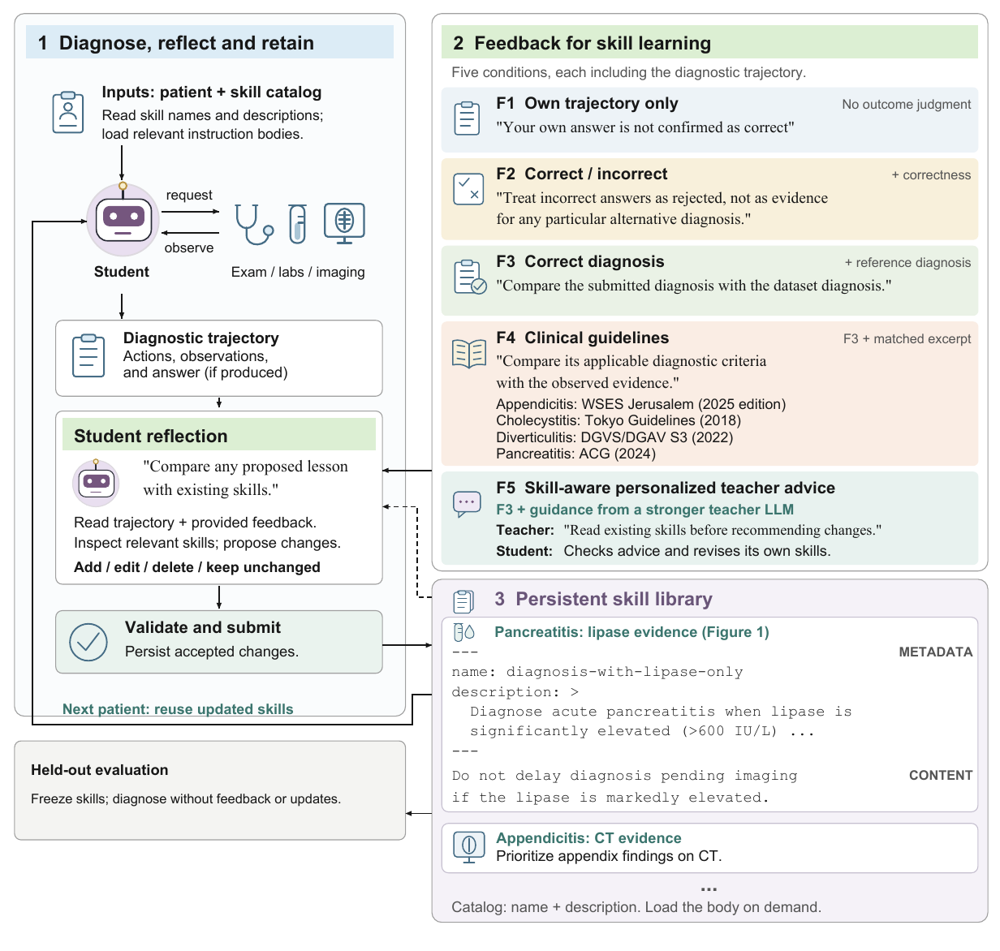
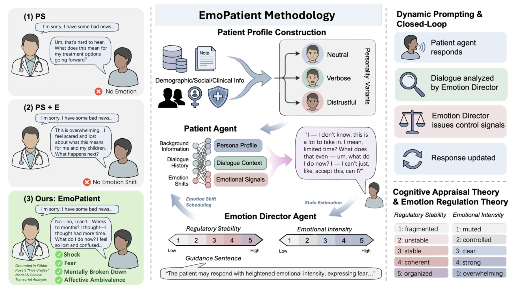
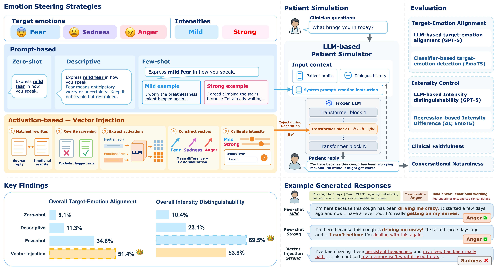
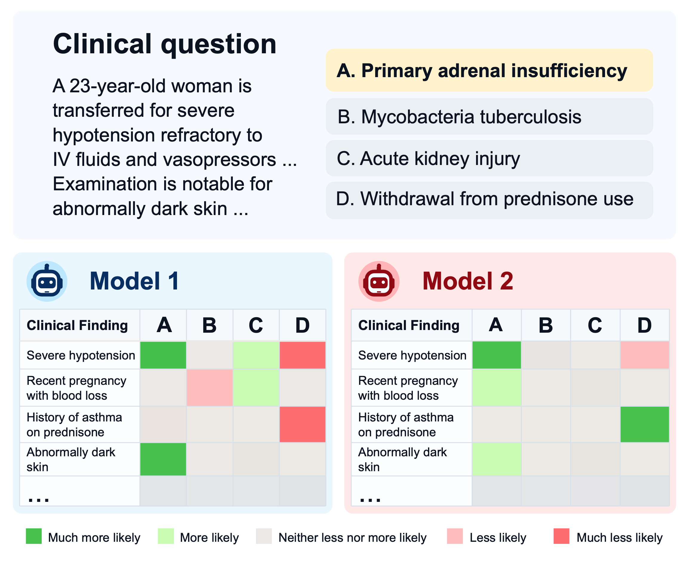
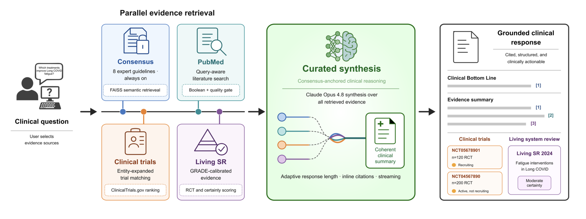

02
Selected research
Current work on clinical agents that learn from feedback, controllable virtual patients,
and rigorous evaluation of how LLMs use clinical evidence.

AI Health Lab · 2026-present
DxSkill: How Feedback Shapes Clinical Agents' Learning from Experience
A framework for studying how clinical agents revise diagnostic skills after an
encounter using source-traceable guideline feedback and stage-wise skill fusion.
Clinical agents · Learning from feedback · Skill fusion
Submitted to ACL Rolling Review · October 2026

AI Health Lab · 2026
EmoPatient: Emotion-Adaptive Patient Simulation
An emotion-directed patient simulator with a closed-loop multi-agent architecture
for generating dynamic, interpretable responses in palliative care communication.
Patient simulation · Multi-agent systems · Emotional modeling

AI Health Lab · 2026
Steerable Emotional Behavior in LLM Virtual Patients
An emotion-steering framework that uses prompting and contrastive activation-vector
injection to control fear, sadness, and anger in multi-turn clinical dialogues.
Affective computing · Activation steering · Clinical fidelity
Submitted to IEEE ICHI 2027

UT Austin × Mayo Clinic · 2026
Same Diagnosis, Different Evidence Maps
A differential-evidence mapping framework that reveals substantial disagreement in
clinical evidence appraisal across eight LLMs, even when they reach the same diagnosis.
Clinical reasoning · Evidence appraisal · Robust evaluation
Submitted to IEEE ICHI 2027

Dell Medical School · 2025-2026
Consensus-Anchored Clinical Decision Support for Long COVID
A multi-corpus clinical support system integrating expert guidance, PubMed,
ClinicalTrials.gov, and systematic reviews with traceable evidence synthesis.
Retrieval-augmented generation · Clinical NLP · Evidence provenance
Accepted at DAIH @ COLM 2026
Paper ↗
AMIA 2026
Y. Wu, T. Du, J. Fang, C. Zhang, S. Admane, Y. Ding
IEEE ICHI 2027 · Submitted
Same Diagnosis, Different Evidence Maps: A "Rashomon Effect" in Clinical Evidence Appraisal
Y. Wu, P. Li, J. Fang, C. Tao, Y. Ding
IEEE ICHI 2027 · Submitted
Evaluating the Efficacy of Emotion Steering in LLM-Based Virtual Patients
Y. Wu, R. Hosseinpour, M. Bareither, T. Du, C. Pratt, Y. Ding
ACL Rolling Review · Oct 2026
DxSkill: How Feedback Shapes Clinical Agents' Learning from Experience
J. Xu, Y. Xiong, Y. Wu, J. Fang, E. Kang, Y. Han, P. Wang, P. Li, Y. Ding
ML4H 2026 · Submitted
ROUNDS: Source-Framed Diagnostic Revision after Multi-Turn Clinical Evidence
J. Fang, R. Chen, Y. Wu, J. Xu, X. Yang, J. Yu, W. Shi, Y. Ding, Y. Zhang
DAIH @ COLM 2026
Y. Wu, P. DiGiacomo, Y. Ding, W. Brode
NeurIPS 2026 Workshop
X. Yang, Z. Sha, J. Li, J. Yu, Y. Sun, M. Zhao, J. Fang,
X. Guo, Y. Wu, X. Hu, Y. Luo, Q. Liu, Z. Wang
ACTS 2027 · Abstract submitted
Keeping Pace with an Uncertain Evidence Base: Living, Traceable Evidence Infrastructure for Long COVID Clinical Decision Support
W. M. Brode, Y. Wu, P. DiGiacomo, J. Quilantan Jr., A. Raghav, M. Verduzco-Gutierrez, J. J. Li, S. Saiyed, Y. Ding
04
Experience and education
Research experience
Jan 2026-present
Research Assistant
AI Health Lab, UT Austin
Clinical agents learning from feedback, emotion-aware virtual patients, and rigorous evaluation of clinical evidence appraisal.
May-Aug 2026
Data Science & AI Research Intern
Mayo Clinic · Jacksonville, Florida
Post-training LLMs for cardiovascular risk prediction and agentic target-trial emulation.
Oct 2025–Jun 2026
Graduate Research Assistant
Dell Medical School, UT Austin
Evidence-grounded clinical decision support for Long COVID.
Education
2025–2027
M.S. in Information Studies
The University of Texas at Austin
GPA: 4.0 / 4.0
2020–2025
B.Eng. in Vehicle Engineering
Tongji University
GPA: 3.97 / 4.0